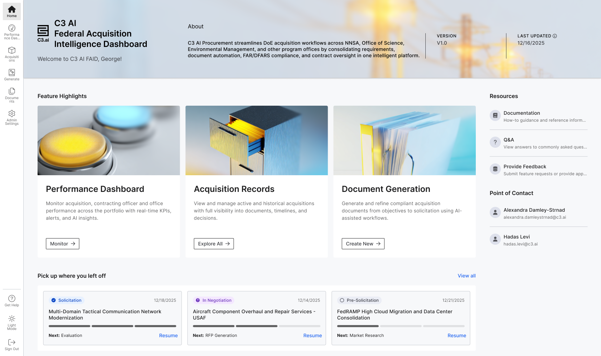
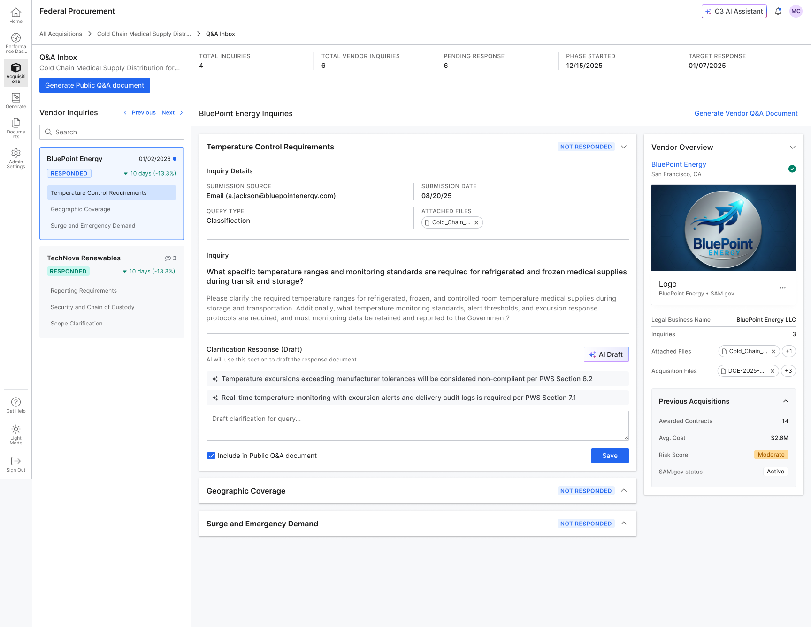
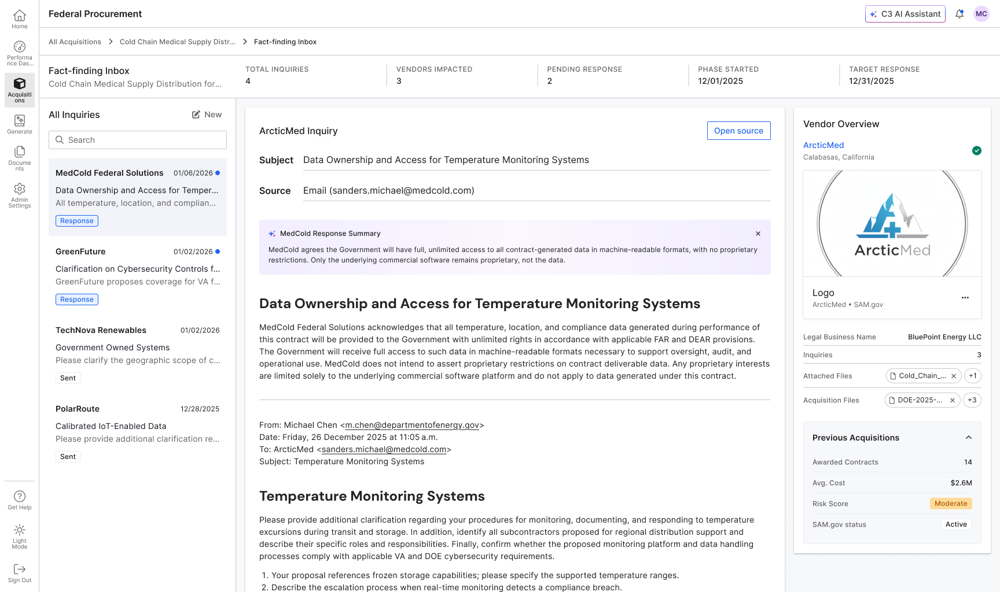

AI-powered federal procurement for the Department of Energy
End-to-end enterprise design for a platform that modernizes the DOE acquisition lifecycle — from solicitation generation through contract award — using agentic AI workflows.
A fragmented, manual process ripe for AI
The DOE's procurement team manages hundreds of acquisitions annually — each spanning months of manual document drafting, vendor research, compliance review, and multi-level approvals across disconnected tools. There was no single source of truth for acquisition status, and contracting officers were spending most of their time on repetitive work rather than judgment calls.
Manual, fragmented, slow
Document generation, market research, and compliance tracking were entirely manual — error-prone and bottlenecked at every stage.
Agentic AI + role-tailored UX
Let AI handle the repetitive work. Design the interface carefully around each persona's actual permissions, workflows, and mental models.
Four personas, each with different needs and access
A central design challenge: four distinct user types with fundamentally different authority levels — all sharing one platform.
Key insight: The permission boundaries between personas weren't just a compliance requirement — they became a product feature. Scoping each interface to its user's actual context dramatically reduced cognitive load and improved adoption.

The four critical journeys designed end-to-end
Key interfaces from the final design

The CO's primary workspace — a filterable list of all active acquisitions with AI-tagged status, cycle time tracking, and drill-down access.

Manages the vendor question period after solicitation release. AI drafts responses to vendor inquiries, which COs review before publishing as an official FAQ document.

After proposals are received, the fact-finding module surfaces vendor emails and AI-parsed responses — helping COs assess cost justifications and build negotiation positions.

The AI evaluation panel surfaces a pass/fail recommendation with confidence score, compliance checklist, and differentiators — giving COs evidence-backed vendor analysis at a glance.
The choices that defined the product
Role-scoped navigation
The nav is dynamically scoped to each persona — not greyed out, but genuinely different. Reduces cognitive load and builds trust through clarity.
Configurable AI autonomy
Admins can dial the level of AI involvement at each acquisition stage — from fully autonomous to human-in-the-loop — via a legible control interface.
Document-centric design
Federal procurement is document-driven. The design adopts an inline editing model so COs stay in flow rather than jumping between tools.
Audit trail by default
Every action surfaces as a timeline event on the acquisition record — useful as a workflow aid for COs, and essential for FAR/DEAR compliance.
Interested in seeing more?
Reach out to walk through the full prototype and design decisions.
Contact me for a demo →